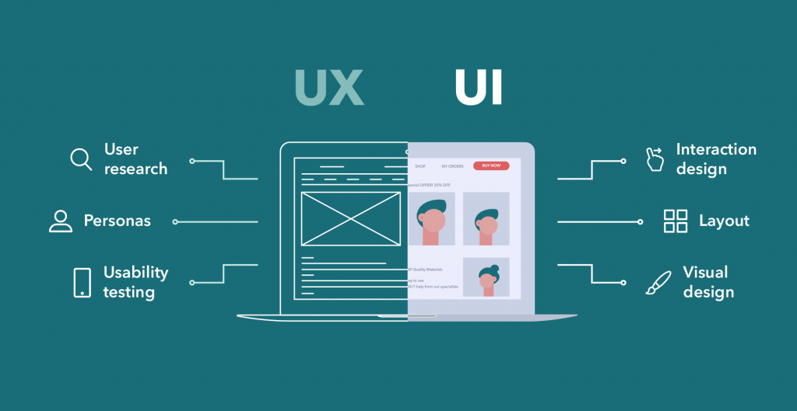

Explicação pergunta 14 - o que são o design de interface de usuário (UI) e o design de experiência do usuário (UX), e qual é o principal objetivo de cada um. Um resumo do texto é:

Design de interface
O design de UI é responsável pela parte visual e interativa de um produto, sistema ou serviço digital. Ele busca tornar a interface atraente, coerente e intuitiva para o usuário.
O design de UX é o processo que visa entender as necessidades, as expectativas, os comportamentos e as emoções dos usuários ao interagir com um produto, sistema ou serviço digital. Ele busca garantir que a interação seja satisfatória, útil, acessível, credível e inovadora para o usuário.
O principal objetivo do design de UI é criar uma interface que seja fácil de usar e que proporcione uma boa experiência ao usuário. Já o principal objetivo do design de UX é entender o usuário e projetar soluções que atendam às suas necessidades e expectativas.
O design de UI e UX são essenciais para o sucesso de qualquer produto, sistema ou serviço digital. Eles devem ser aplicados em conjunto, seguindo etapas como pesquisa, planejamento, prototipação, teste e avaliação.